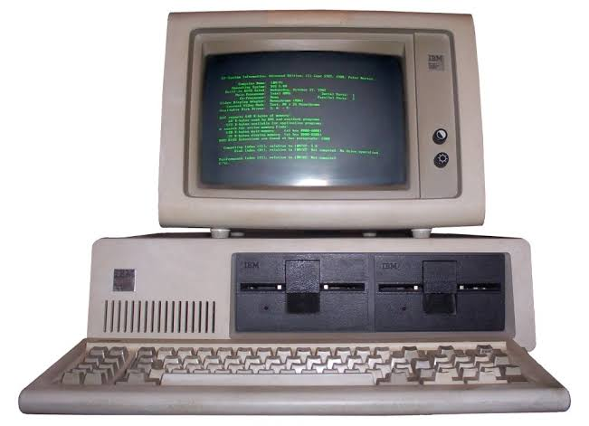
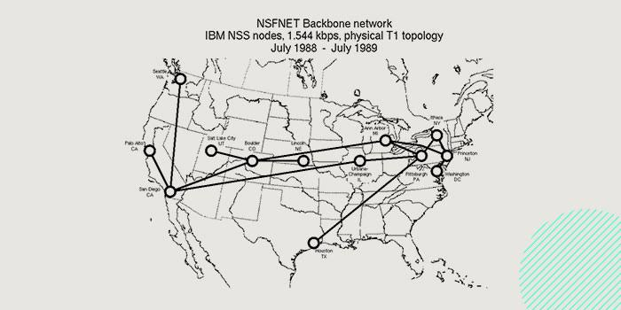

80s
Inicio
60´s
90's
2000´s
1980 C ++
Es un lenguaje de programación diseñado a mediados de los años 1980 por Bjarne Stroustrup. La intención de su creación fue el extender al lenguaje de programación C mecanismos que permiten la manipulación de objetos. En ese sentido, desde el punto de vista de los lenguajes orientados a objetos, el C++ es un lenguaje híbrido.Actualmente existe un estándar, denominado ISO C++, al que se han adherido la mayoría de los fabricantes de compiladores más modernos.

1982 DOS
DOS (sigla de Disk Operating System, “Sistema Operativo de Disco” y “Sistema Operativo en Disco”) es una familia de sistemas operativospara computadoras personales (PC). Creado originalmente para computadoras de la familia IBM PC, que utilizaban los procesadores Intel8086 y 8088, de 16 bits, siendo el primer sistema operativo popular para esta plataforma.
1986 IBM PC1
Primer microcomputador de escritorio, el IBM 5100, introducido en 1975. Era un sistema completo, que tenía incorporado un monitor, un teclado, y un almacenamiento de datos en una sola carcasa.

1986: La NSF comenzó el desarrollo de NSFNET que se convirtió en la red principal en internet.

1989: El CERN de Ginebra Tim Berners-Lee creó el lenguaje HTML, basado en SGML.


Documento PDF